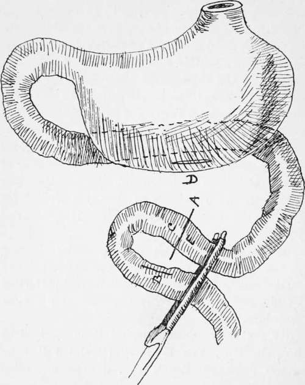
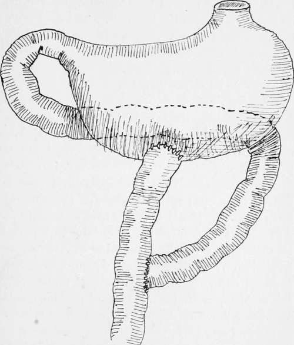

Roux's Operation
Description
This section is from the book "Cancer Of The Stomach", by A. W. Mayo Robson, D.Sc, F.R.C.S.. Also available from Amazon: Cancer of the Stomach.
Roux's Operation
This method, which is also spoken of as the Y operation, was suggested and carried out by Roux, and is, I believe, still performed by him and by some other operators as a routine procedure.
At the International Surgical Congress held at Brussels, 1905, Von Eiselberg (2) stated that he always employed Roux's operation as a routine procedure.
This operation was invented when regurgitant vomiting or the vicious circle was a frequent complication of gastroenterostomy, and then it was a distinctly useful modification, as it is still when a posterior gastroenterostomy cannot be performed on account of extensive adhesions or from extent of growth.
Fig. 18.-Eoux's operation.
As an ordinary procedure, Roux's operation is not necessary, and I think it undesirable, as it involves a double anastomosis.
Fig. 19.-Roux's operation.
It may be performed as follows : After clamping the portion of stomach to which the anastomosis is to be made, a loop of jejunum of about 9 in., aboutn 10 in. from the duodeno-jejunal flexure, is grasped by a pair of long rubber-covered clamps.
This loop is divided at a ; the open end of the bowel e is then sutured to a lateral opening made into the other arm of the loop at e. The open end c is then stitched to an opening made into the stomach at d.
When completed, the operation presents the appearance shown in the diagram.
I have carried out the procedure with advantage in extensive perigastritis with matting of the viscera, in wide-spread gastric carcinoma, and in jejunal ulcer where it was necessary to excise part of the ulcerated jejunal loop.
After-Treatment
When the patient is returned to bed he is propped up at an angle of about 30° by means of pillows placed under the back and shoulders. As soon as the effects of the anaesthetic have passed off the elevation may be increased to 45°. A narrow bolster, covered with jaconet and a linen bolster-case, is placed under the thighs and fastened to the upper bar at the top of the bed by means of webbing straps. This sling prevents the patient from slipping down in bed and also flexes the thighs and thus causes relaxation of the abdominal muscles. By maintaining the semi-sitting posture it largely contributes to the absence of post-operative vomiting, and at the same time relieves the breathing. If preferable the pillows may be taken out at night aud the patient allowed to be at a lower angle on the right side, but it is wise to keep the patient propped up during the first twenty-four hours.
The gamgee leggings may be taken off, but the sleeves or jacket should be allowed to remain on for some days to prevent chilling. A warm nutrient, consisting of salt solution 1 pint, brandy 1 oz., liquid peptonoids 1 oz., is then administered. This is re-repeated every four hours during the first forty-eight hours with a less quantity or even without the brandy if thought desirable, after which it may be gradually discontinued. If the nutrient enemata are not retained simple saline nutrients should be tried. As soon as the patient has come round from the anaesthetic, feeding by the mouth may be commenced. Water, or better still, albumen-water, is given, \ oz. at a time, every half hour. If there is no sickness or nausea the quantity is increased. Thirst may be relieved by permitting the patient to wash out the mouth frequently with water or soda-water. If there is severe abdominal pain, 10 gr. of aspirin should be given by the mouth and repeated, if necessary, in two or three hours. Morphine should not be given, as it is apt to cause sickness and distension of the intestines. The abdominal bandage, which is applied firmly after the operation, may have to be loosened to give greater comfort.
On the day after the operation the amount of food given is steadily increased. It is impossible to give a routine dietary for these cases, as the tastes of the patients have to be considered. The following may be taken as a basis for the feeding during the first week. Feeding during the night should be regular, unless the patient is asleep. It is only in exceptional cases that it is necessary to disturb the patient:
First day: Water, albumen-water, tea, J oz. to 1 oz. every half hour.
Second day: Ditto, with barley-water and plasmon; meat juice or jelly in teaspoonful doses ; coffee containing a little cream or milk ; whey with a little cream : 2 oz. feeds.
Third day : Ditto ; broth with pounded chicken, Benger's food, made with milk.
Fourth day : Custard, junket, whey, milk jelly, tea or coffee, or any of above fluids that patient cares for.
Fifth day: Pounded chicken, fish, steamed or lightly-boiled eggs and bread crumbs; fluids as before.
Sixth day : Same as previous day, with the addition of milk pudding or brains.
Seventh day : Same as previous day. Bread and butter, toast and mashed potato and gravy may be given in small quantities. Pounded or finely-minced chicken and mutton in broth or in sandwiches can, as a rule, be allowed.
During the second week the amount of solid and liquid food is increased, with longer intervals between feeding. Care should be exercised in diet for some months : condiments should, as a rule, be avoided, and highly-seasoned or twice-cooked foods be eschewed.
After the operation the rectum is washed out every twenty-four hours with a pint of hot soapy water. Should there be distension of the abdomen from flatus, a tablespoonful of turpentine or 10 v\ of oil of cajuput is added to the enema. No aperient is given as a routine measure, and as a rule none is given before the fourth day, but if one is required, that to which the patient has been accustomed is preferred. In some cases calomel, followed by a saline, in others cascara, and in others a compound aloin tablet may be required.
Continue to:
Tags
stomach, operation, cancer, tumour, ulcer, gastric, gastrectomy